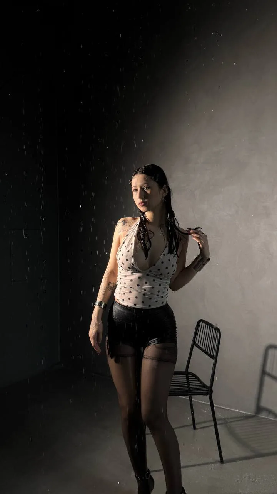

Архитектура
Понимать нагрузку
Точки роста помогают объяснить, почему место удара и место трещины могут различаться.

Разберись, как архитектура влияет на носку и на что смотреть, когда клиентка возвращается с трещиной, сколом или отслойкой.
Об участии ↘
Для меня одна из самых интересных фотографий маникюра — та, которую клиентка присылает через неделю. На ней видно, как работа выдержала обычную жизнь.
На интенсиве предлагаю вместе посмотреть на знакомые тебе случаи глазами мастера. Почему у одного ногтя первым сдаётся угол? Что стоит заметить, прежде чем брать другой гель?
От автора «ПРОЧНО»Вчера ты снимала ровный блик крупным планом. Сегодня клиентка обводит трещину на фото и спрашивает, когда можно прийти на ремонт.
Ты уже пробовала другую базу. Если ситуация повторяется, стоит присмотреться к тому, что осталось прежним в конструкции.
Что даёт понимание архитектуры?Устойчивость конструкции проявляется в носке.
ТОЧКИ РОСТАДва ногтя сверху выглядят одинаково. Поворачиваешь руку, смотришь с торца — и видишь две разные конструкции.
Архитектура
Точки роста помогают объяснить, почему место удара и место трещины могут различаться.
Профиль
Апекс и арки дают ориентиры для оценки работы с разных ракурсов.
Изгибы
Разберёшь роль рёбер жёсткости и поймёшь, почему дополнительный слой геля не всегда решает проблему.
Ты осваиваешь моделирование и хочешь понимать, по каким признакам оценивать свою работу.
Ты давно работаешь с клиентами, но одинаковые сколы у разных людей всё ещё ставят в тупик.
Ты хочешь увереннее объяснять клиентке, что могло повлиять на носку и что стоит проверить.
Ты сможешь связать место повреждения с нагрузкой и точнее сформулировать, что стоит проверить в архитектуре работы.
Да. Разберём их взаимосвязь, чтобы оценивать моделирование и по силуэту, и по устойчивости конструкции.
Участие в профессиональном nail-интенсиве стоит 9 €.
Профессиональный интенсив — всего 9 €
Чтобы на следующей коррекции ты понимала, какие детали работы заслуживают внимания и почему.
Оплата пока закрыта.